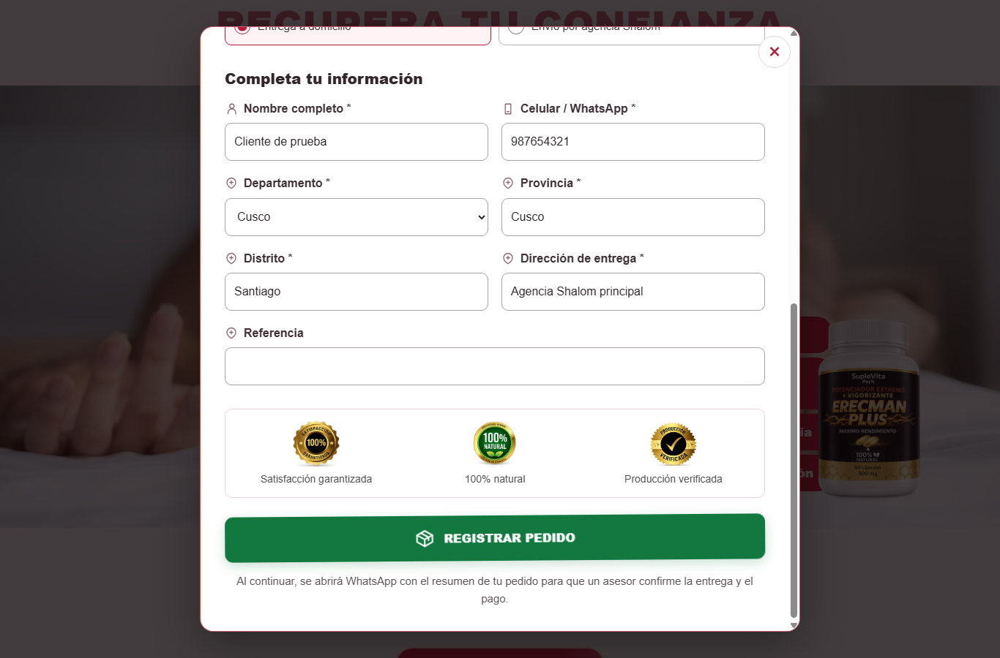
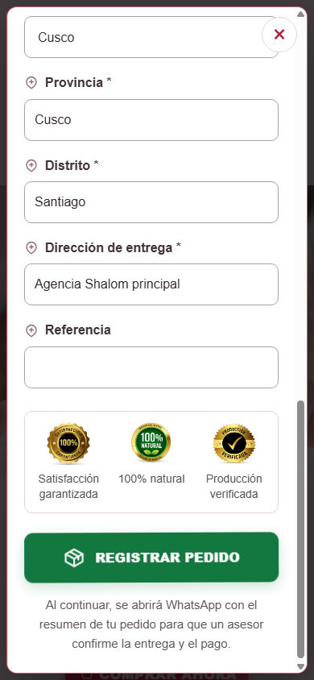

Formulario sin resumen visible
Promociones, envío y datos del cliente, seguidos de los tres sellos de verificación y REGISTRAR PEDIDO. WhatsApp conserva todos los datos y cálculos del pedido.
Escritorio · sellos y botón

Móvil · sellos y botón
